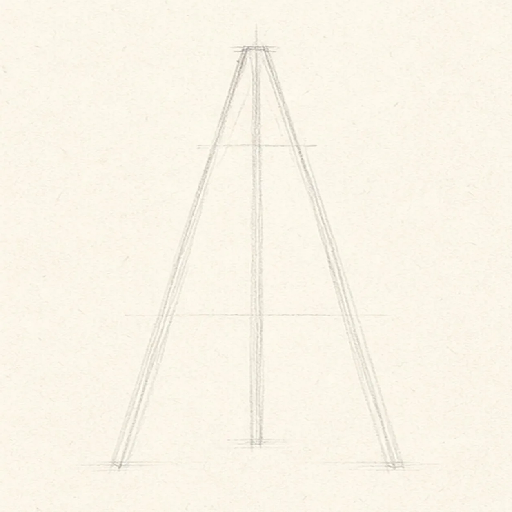
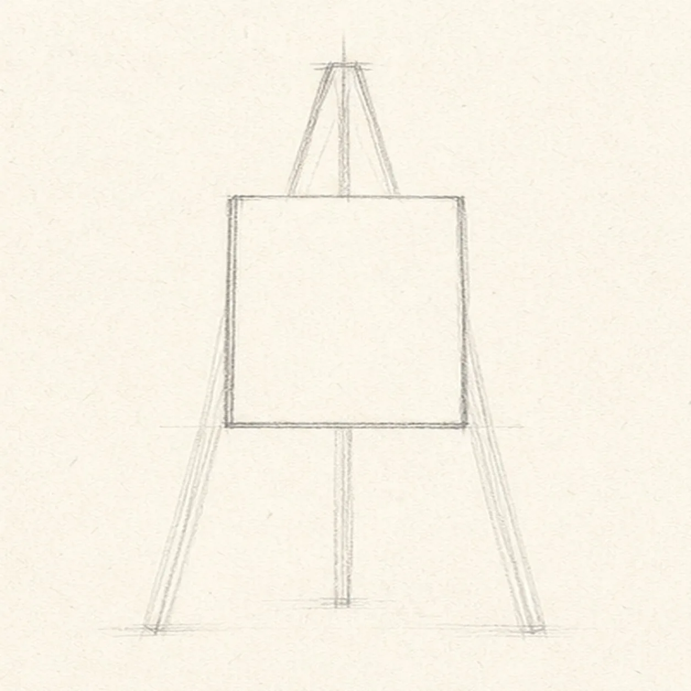
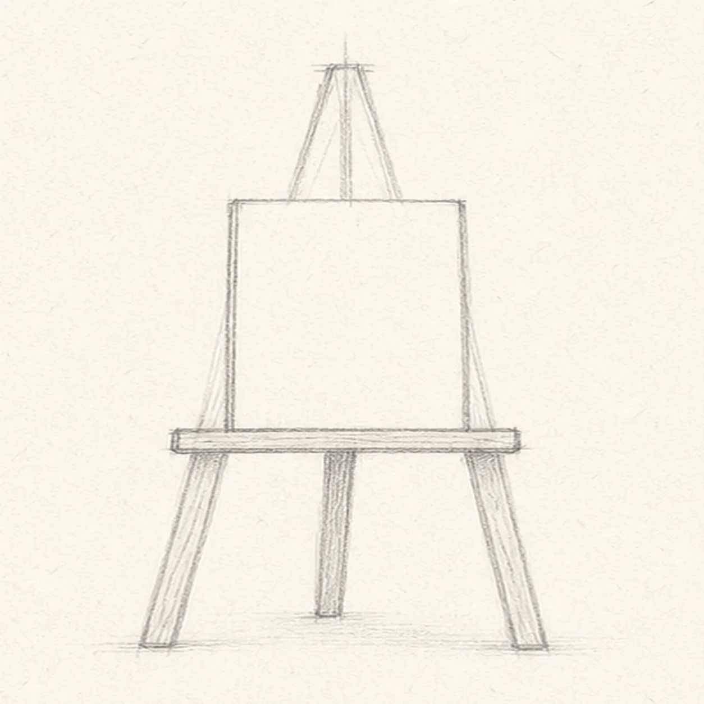
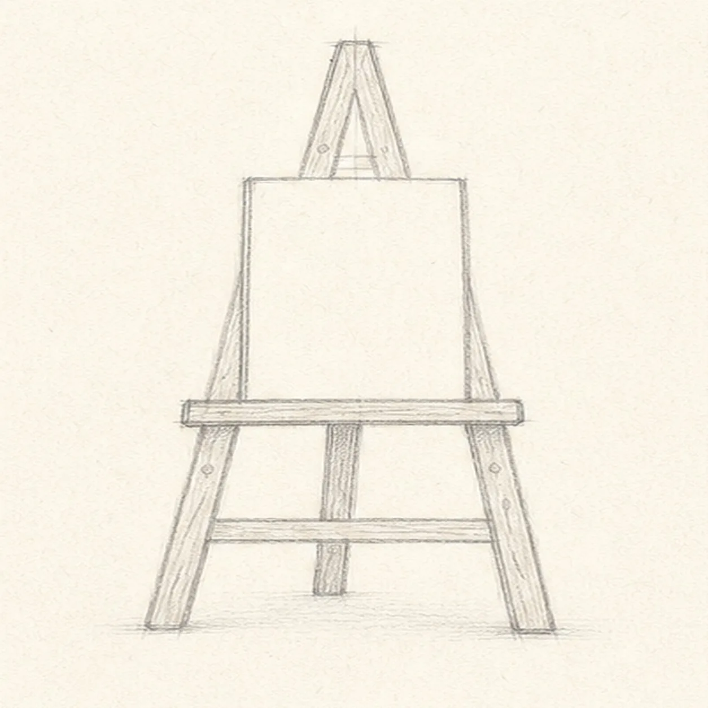
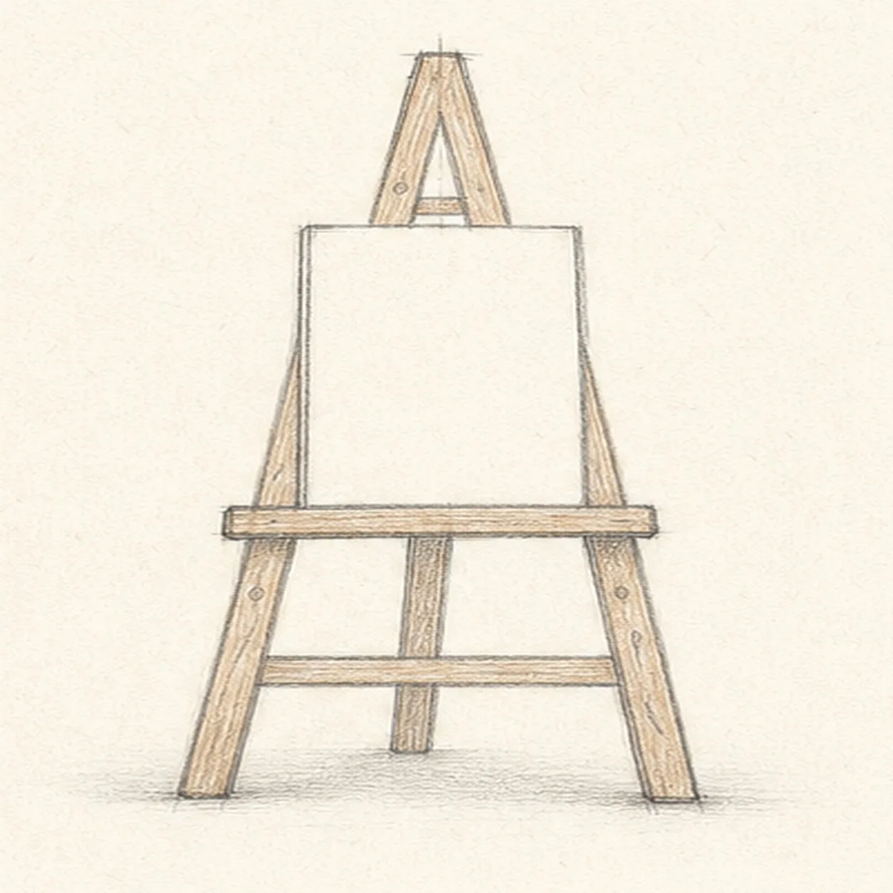

From the archive
Let's draw a wooden artist easel
Treat this as one small practice round: build the subject lightly, notice the shapes, then darken only the lines that help the finished sketch.
-
01

Set the A-frame
Draw two long front legs leaning toward a top point, then add a light center guide between them.
Sketch tip: Place the top point first, then aim both feet outward from it. Check the triangle's empty space before you darken either leg.
-
02

Place the canvas
Add a small blank rectangular canvas inside the established frame.
Sketch tip: Keep the canvas edges parallel to each other, even if the easel legs lean. That quiet contrast helps the drawing feel stable.
-
03

Build the support
Draw a shallow shelf under the canvas and a simple rear support leg behind the established frame.
Sketch tip: Let the shelf extend just past each front leg. The small overhang makes the canvas look supported without adding much detail.
-
04

Add wooden details
Connect the existing legs with simple crossbars and add a few light wood-grain marks.
Sketch tip: Use only a handful of grain lines and let them follow the length of each wooden piece. Too many short marks can make the frame look furry instead of wooden.
-
05

Shade the timber
Lay a pale brown tint on the existing wooden parts and add a soft graphite floor shadow beneath the easel.
Sketch tip: Shade lightly along the length of each leg, keeping the blank canvas clean. A light shadow is enough to make the easel stand on the page.
-
06
Finish the studio sketch
Strengthen the keeper edges, clarify the existing shelf, crossbars, and grain, and balance the established wood tint and floor shadow.
Sketch tip: Stop before painting the canvas or adding brushes and palettes. The clean canvas and clear A-frame are the whole drawing exercise.